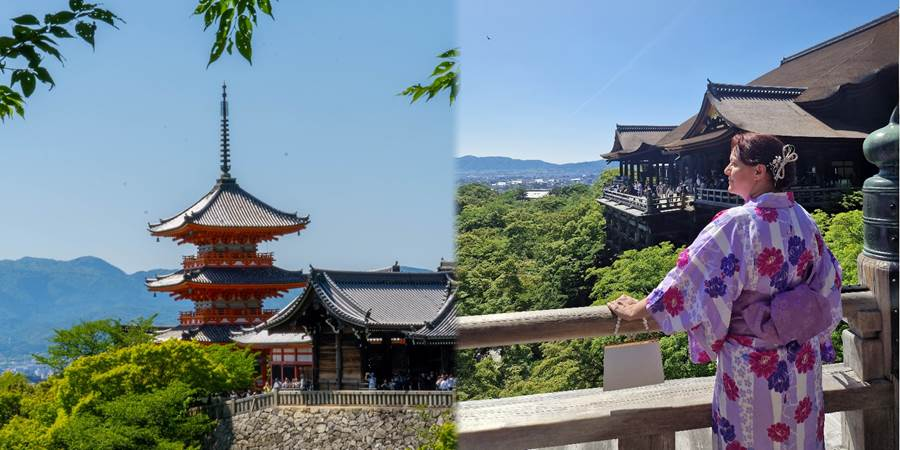

Dan osmi: Šinkansen, kimona, ženska beskompromisnost i kiseli krastavac
Krenuli smo u Kyoto. Vozom metkom Shinkansenom. Juri preko 300 na sat.
Dobili smo sedišta na pravoj strani voza, nisam uspela da biram ali je ispalo dobro.
Videli smo Fuji san u svoj svojoj lepoti, bez imalo magle ili oblaka. Još ima i snega na vrhu. Divota.
Stigli smo u Kyoto i šok. Svi smo obesili noseve. Naš kraj je bio kao brazilske favele.
Uske ulice. Neke fasade prljave. Isprepletani elektro vodovi.
Taksi maltene kao na Kubi. Neka prastara vozila.
Ovi ljudi, da li su Japanci? Varaju, guraju se preko reda.
Puno više belih turista nego u Tokiju. Sada smo tek naišli na čuvene gužve.
Nema omiljenog 7 Eleven iza ćoška. Smeštaj prljav. Zidovi, prekidači prljavi. Šok.
Stigli smo na stanicu. Uzeli smo taksi. Taksisti su često prastare ćike.
Ovom smo pokazali na mapi gde hoćemo da idemo. Rekli mu na japanskom ono što nam gazda rekao da mu kažemo (gazda poslao u poruci šta da izdeklamujemo).
Taksista je izguglao, pokazao sliku smeštaja i rekosmo to je to.
Odvezao nas je do neke šupe. Nije to to. Ponovo. Dovezao nas i silno se izvinjava ali hoće da naplati sve, 2300 jena.
Al tu stupa na snagu moj japanski. To je preskupo, od stanice do smeštaja je 1000 jena. I on spusti na 1500.
Verovatno bi svaki Japanac platio, oni praštaju greške, ali ja sam sa Balkana.
Došli smo u smeštaj. Ovaj prljav. Gazda nas dočekao u nečem što liči na radionicu. I on mi je izgledao mufljuzasto.
Još iz voza sam rezervisala kimona. Tu smo se oraspoložili. Bilo je interesantno kad su nas oblačili i sređivali.
I Luka i Petar su obukli kimona. Baš su bili slatki.
Onlajn sam rezervisala i dobila celu računicu.
Popust za onlajn rezervaciju je 4000 jena, ali pošto plaćam tek u radnji, plaćam još 1000 jena, dakle ukupni popust je 3000 jena.
Ova se izgrbavila kao „nema popusta“. Krenem u priču i da tražim u telefonu.
Deca, „Mamaaa, nećeš se valjda svađati?“ i ja pustim. Sve u svemu, oprez, ovi Japanci umeju da budu varalice.
Kad smo birali kimona, ograničila nam je ona koje da gledamo.
Meni se svideo baš sa druge gomile. Ne, hvata se ona za glavu. Ne može taj. Zašto? To je letnji.
Meni odgovara. Ali to nije kimono. To je jukata. I to mi odgovara.
Gleda me zabezeknuto.
Dokrajčila sam ju kad sam i ja, kao što je Kristina dobila, tražila čarapice sa prstom za japanke.
Ne, ne može, ne idu uz jukatu. Ali ja znam japanski i kažem joj da će mi biti hladno na noge.
Šta će ona? Otvara fioku i daje i meni čarape.
A tek kad sam na sve to tražila čarape i za Petrovu jukatu!
I onda stiže i druga prodavačica i ne može da se načudi našim izborima, jukatama i to još sa čarapama, ali prva samo sleže ramenima.
Pri tom sam čarape skinula čim smo krenuli jer su mi jako klizele na letnjim drvenim japankama.
Lak za kosu što mi je stavila mi je smrdeo na otrov za bube. A kažu da ne vole jake mirise. Čak sam ga i ja, sa mojim oštećenim njuhom od korone, osetila
Pri tom sam čula da jako stiskaju pojas i mnogi se žale da ne mogu da dišu i da ih boli kičma.
Zato sam se ja nabrbila iz sve snage. Skontala je ona, hoće da zategne, ja ne dam.
Spasće vam kimono. Ja ću ga vratiti. Naučila me kako se kimono gura ispod pojasa ako spadne.
A njima je takođe vrlo bitno sa koje strane ga zatvore.
Samo mrtvacima zatvore sa druge strane.
Deca su našla slatkiš ribicu popularan na Instagramu i pojeli smo.
Otišli smo taksijem do dela gde su stare drvene ulice.
Kyoto je jedini veći grad kome su ostale stare ulice da nisu bombardovane.
Odatle smo otišli u hram Kijomizu Dera, koji je vrlo lep, na brdu sa pogledom na zelenilo i Kyoto.
Vrlo lepo, ali smo ovde spoznali šta je gužva o kojoj se priča i overturizam.
Japanci, hajde da ne grešim dušu, možda i nisu, možda su neki drugi kosoooki, se guraju i ubacuju preko reda za slikanje.
Hram je stvarno prelep.
Spuštali smo se drvenom uličicom sa prodavnicama suvenira, ali na 25 stepeni, sa svim slojevima ispod kimona i peškirima na stomaku.
Bilo nam je vruće pa smo rešili da vratimo kimona.
Jedna starija gospođa i jedan mlađi čovek su mi rekli da sam lepa u kimonu.
Naišla sam da prodaju kao grickalicu, krastavac veliki, na štapu. Nešto skvrčen.
Jedu ga Japanci u slast. Sve puca.
Uzela i ja i nije loše. Ukiseljen i dosta slan. Meni osvežavajući.
Bili smo gladni jer nismo hteli da jedemo u kimonima da ih ne umažemo, pa nismo gubili vreme da nađemo nešto fino japansko, nego deca upala u prvi Mek da jedu.
Odlučili smo da odemo do Fushimi Inari shrine, hrama sa puno crvenih kapija, posvećenog lisici.
Reportaža na Travel advisoru